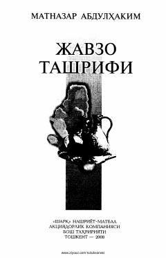

JTMatnazar Abdulhakimning chuqur falsafiy va lirik she'rlar to'plami.
Ushbu to'plamga taniqli o'zbek shoiri Matnazar Abdulhakimning turli yillarda yozilgan sara she'rlari va dostonlari kiritilgan. Kitobda insoniy tuyg'ular, muhabbat, hayot mazmuni va tabiat go'zalliklari teran falsafiy yondashuvda tarannum etilgan.